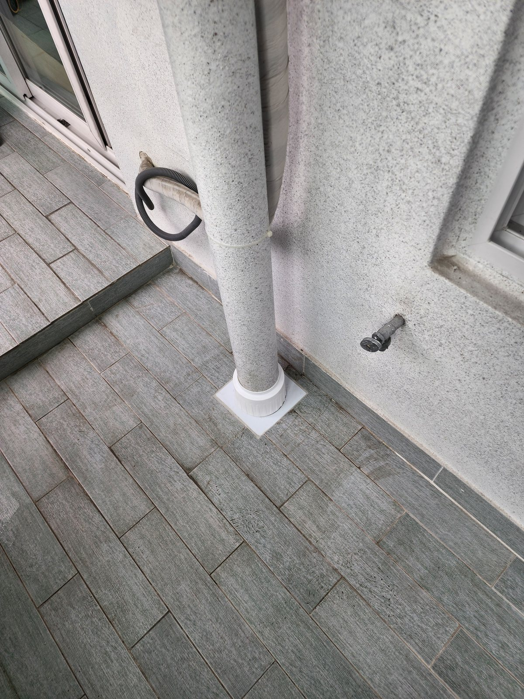
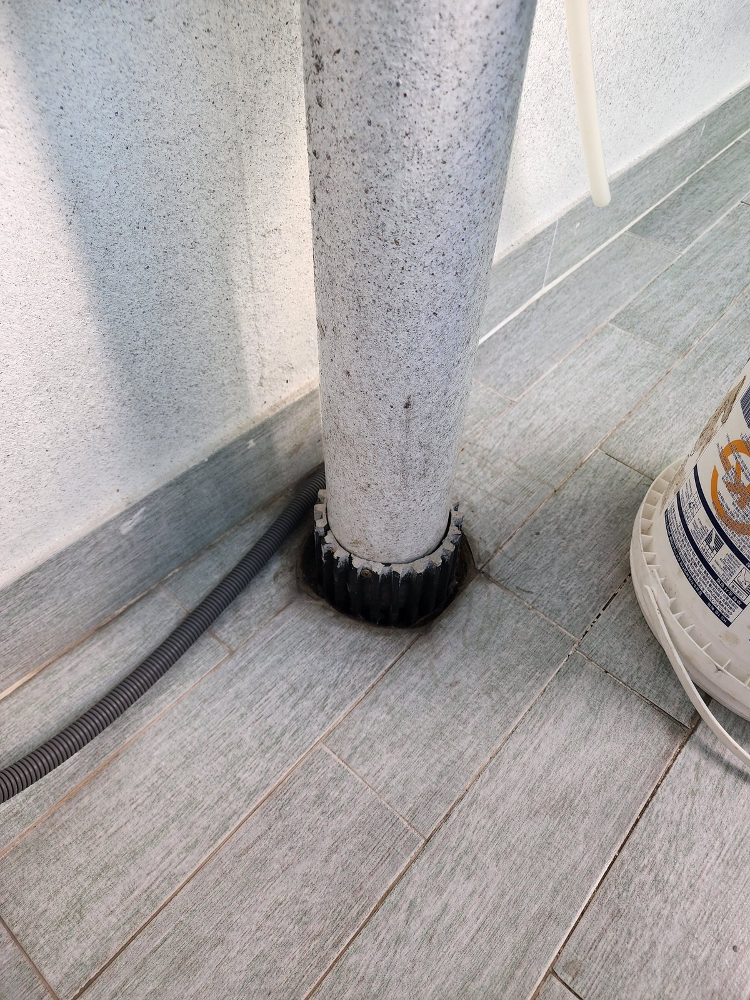
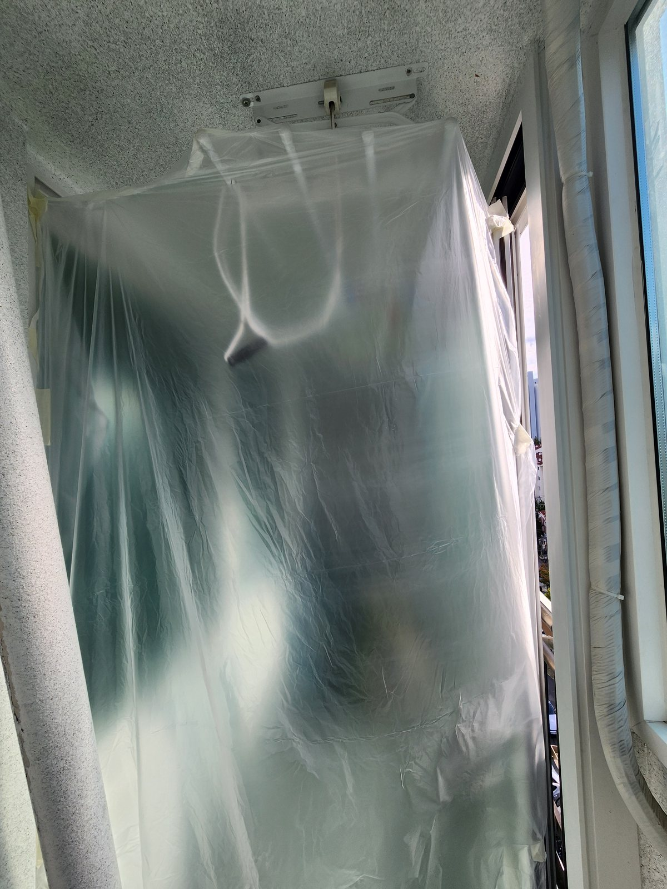
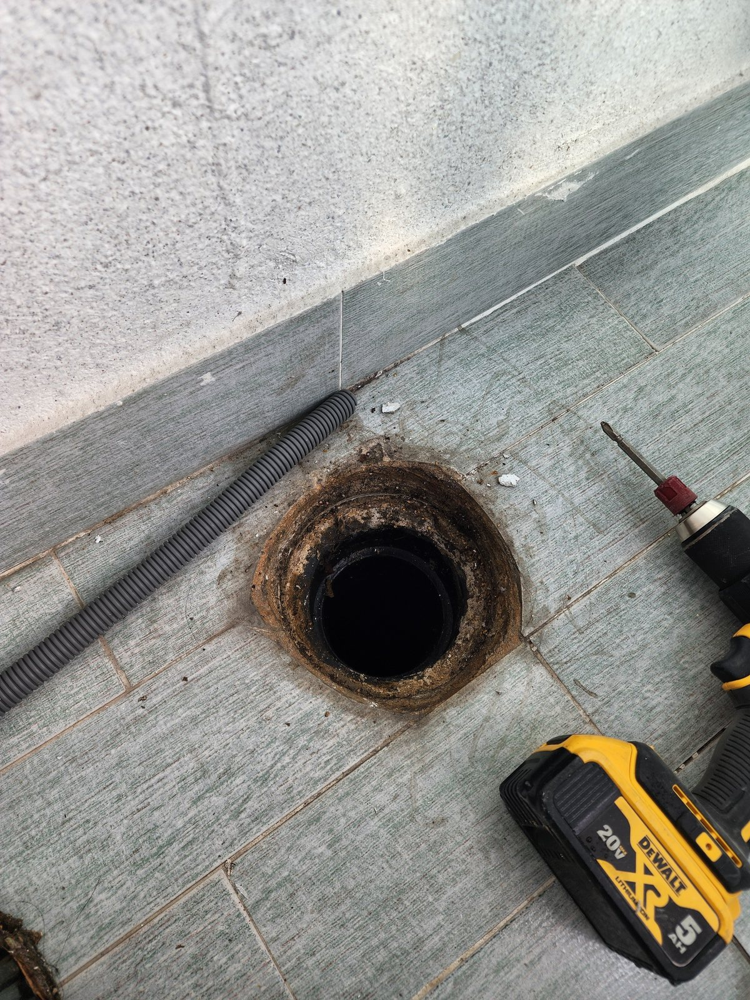
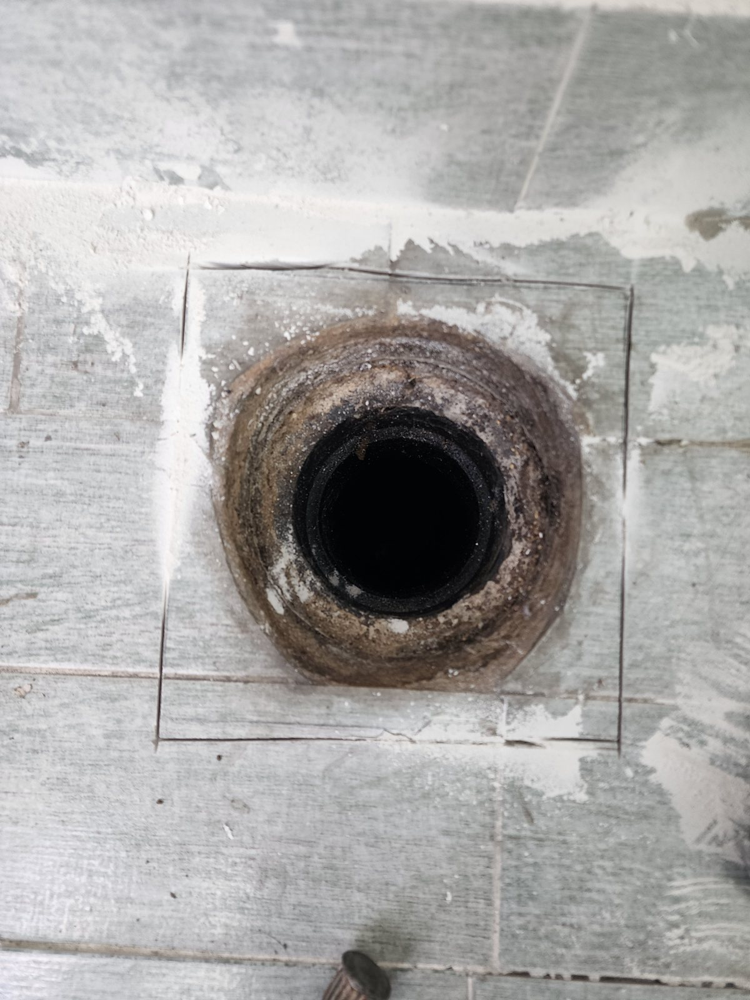
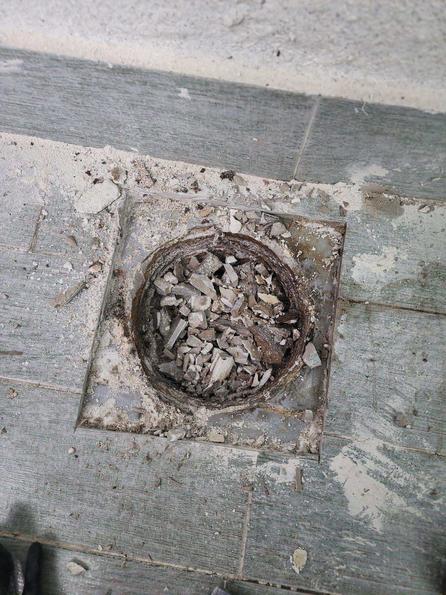
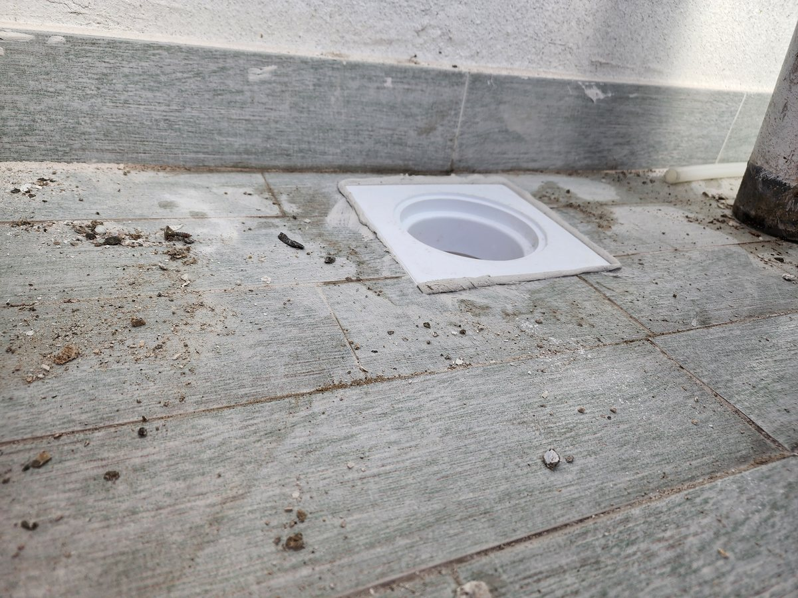
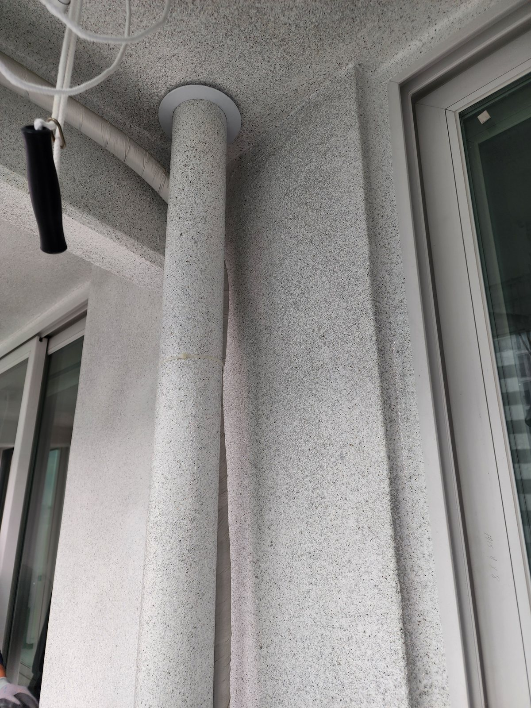

대전 법동 삼호아파트 베란다 우수관 보수｜삭은 바닥 연결부를 새 부속으로 교체

현장 작업 한눈에 보기
- 현장
- 대전 법동 삼호아파트 · 베란다 우수관
- 문제
- 우수관 하부 바닥 연결부
테두리 녹·침착 흔적 - 작업
- 기존 하부 부속 철거·새 바닥 연결 부속 설치
우수관 재연결·하부 커버 마감 - 결과
- 재연결과 바닥 정리까지 사진 확인
통수시험 수치·소요시간은 미기재
대전 대덕구 법동 삼호아파트 베란다 우수관 하부 연결부 보수입니다. 관을 분리해 드러난 기존 연결부를 걷어내고 새 바닥 부속을 맞춘 뒤 우수관을 다시 연결했습니다. 보양부터 재연결까지 실제 사진 8장으로 소개합니다.
1. 작업 전 우수관 하부
대전 대덕구 법동 삼호아파트 베란다의 우수관 보수 현장입니다. 2026년 10월 5일 실제 작업 사진을 순서대로 소개합니다.
첫 사진은 작업 전 우수관 하부입니다. 수직관이 바닥 배수구로 들어가는 자리에 검은색 기존 부속이 끼워져 있습니다.

2. 빨래 건조대와 창 주변부터 보양
바닥과 벽 연결부를 다루는 작업이라 먼지와 물이 튈 수 있습니다. 작업 전에 천장 빨래 건조대와 주변을 비닐로 덮어 두었습니다.

3. 관을 분리하자 드러난 기존 연결부
우수관을 분리하니 바닥 배수 연결부의 테두리에 녹과 침착 흔적이 보였습니다. 사진만으로 누수 원인을 확정하지는 않지만, 오래된 부속과 바닥 사이가 이런 상태라면 새 부속으로 바꾸는 편이 이후 관리에 유리합니다.

4. 타일을 사각으로 잘라 범위를 정했습니다
기존 부속을 걷어내기 위해 배수구 둘레의 타일을 사각으로 잘랐습니다. 필요한 범위만 열어야 복구할 면적도 줄어듭니다.

5. 기존 부속 철거
절단한 범위 안의 기존 부속과 몰탈을 깨어 냈습니다. 새 부속이 바르게 앉을 수 있도록 안쪽을 정리하는 단계입니다.

6. 새 바닥 연결 부속 설치
정리한 자리에 흰색 새 바닥 연결 부속을 맞췄습니다. 원형 연결부와 사각 받침이 주변 타일 높이와 맞는지 함께 확인했습니다.

7. 우수관 재연결과 하부 커버
수직 우수관을 새 부속에 다시 연결하고 하부를 흰색 커버로 마감했습니다. 첫 사진의 검은색 기존 부속 자리와 비교해 보세요.
8. 천장 관통부 쪽 연결
위쪽 천장 관통부도 다시 연결해 마감 링을 끼웠습니다. 우수관은 위·아래 연결부가 함께 맞아야 하므로 두 곳을 모두 기록했습니다.

9. 확인한 범위와 상담 안내
작업이 끝난 뒤 베란다 바닥의 먼지와 잔재를 정리했습니다.
이번 기록은 사진으로 확인되는 공정 범위입니다. 통수시험 수치와 총 작업시간은 자료가 없어 적지 않았습니다. 우수관 주변에 물 자국이 보이면 발생 시점과 함께 우수관 위·아래 연결부 사진을 준비해 상담해 주세요.